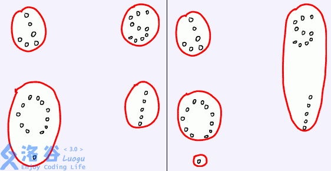

P4047 [JSOI2010]部落划分
题目描述
聪聪研究发现，荒岛野人总是过着群居的生活，但是，并不是整个荒岛上的所有野人都属于同一个部落，野人们总是拉帮结派形成属于自己的部落，不同的部落之间则经常发生争斗。只是，这一切都成为谜团了——聪聪根本就不知道部落究竟是如何分布的。
不过好消息是，聪聪得到了一份荒岛的地图。地图上标注了 n 个野人居住的地点（可以看作是平面上的坐标）。我们知道，同一个部落的野人总是生活在附近。我们把两个部落的距离，定义为部落中距离最近的那两个居住点的距离。聪聪还获得了一个有意义的信息——这些野人总共被分为了 k* 个部落！这真是个好消息。聪聪希望从这些信息里挖掘出所有部落的详细信息。他正在尝试这样一种算法：
对于任意一种部落划分的方法，都能够求出两个部落之间的距离，聪聪希望求出一种部落划分的方法，使靠得最近的两个部落尽可能远离。
例如，下面的左图表示了一个好的划分，而右图则不是。请你编程帮助聪聪解决这个难题。

输入格式
输入文件第一行包含两个整数n和 k，分别代表了野人居住点的数量和部落的数量。
接下来 n 行，每行包含两个整数 x， y，描述了一个居住点的坐标。
输出格式
输出一行一个实数，为最优划分时，最近的两个部落的距离，精确到小数点后两位。
输入输出样例
输入 #1
输出 #1
输入 #2
1 2 3 4 5 6 7 8 9 10 9 3 2 2 2 3 3 2 3 3 3 5 3 6 4 6 6 2 6 3
输出 #2
求最小生成树，一共有k个部落，我们只需要找n-k条边，第n-k+1条边就是答案.
二分：枚举一个距离 d ,将所有 <d 的连起来，用并查集判断是否可以分成 k 个部落。
1 2 3 4 5 6 7 8 9 10 11 12 13 14 15 16 17 18 19 20 21 22 23 24 25 26 27 28 29 30 31 32 33 34 35 36 37 38 39 40 41 42 43 44 45 46 const int MAX=1000 +10 ;int n,k,tot=0 ,cnt=0 ,f[MAX];int find (int x) return f[x]==-1 ?x:f[x]=find(f[x]); } struct node { double x,y; }a[MAX]; double calc (node u,node v) return sqrt ((u.x-v.x)*(u.x-v.x)+(u.y-v.y)*(u.y-v.y)); } struct edge { int u,v; double c; edge(){} edge(int _u,int _v){ u=_u;v=_v;c=calc(a[u],a[v]); } bool operator <(const edge&x)const { return c<x.c; } }e[MAX*MAX]; int main () freopen("in" ,"r" ,stdin ); mem(f,-1 ); sf(n);sf(k); fi(i,0 ,n){ scanf ("%lf%lf" ,&a[i].x,&a[i].y); } fi(i,0 ,n) fi(j,i+1 ,n) e[tot++]=edge(i,j); sort(e,e+tot); fi(i,0 ,tot){ int u=find(e[i].u); int v=find(e[i].v); if (u!=v){ f[u]=v; cnt ++; if (n-k+1 ==cnt){ printf ("%.2lf" ,e[i].c);break ; } } } return 0 ; }